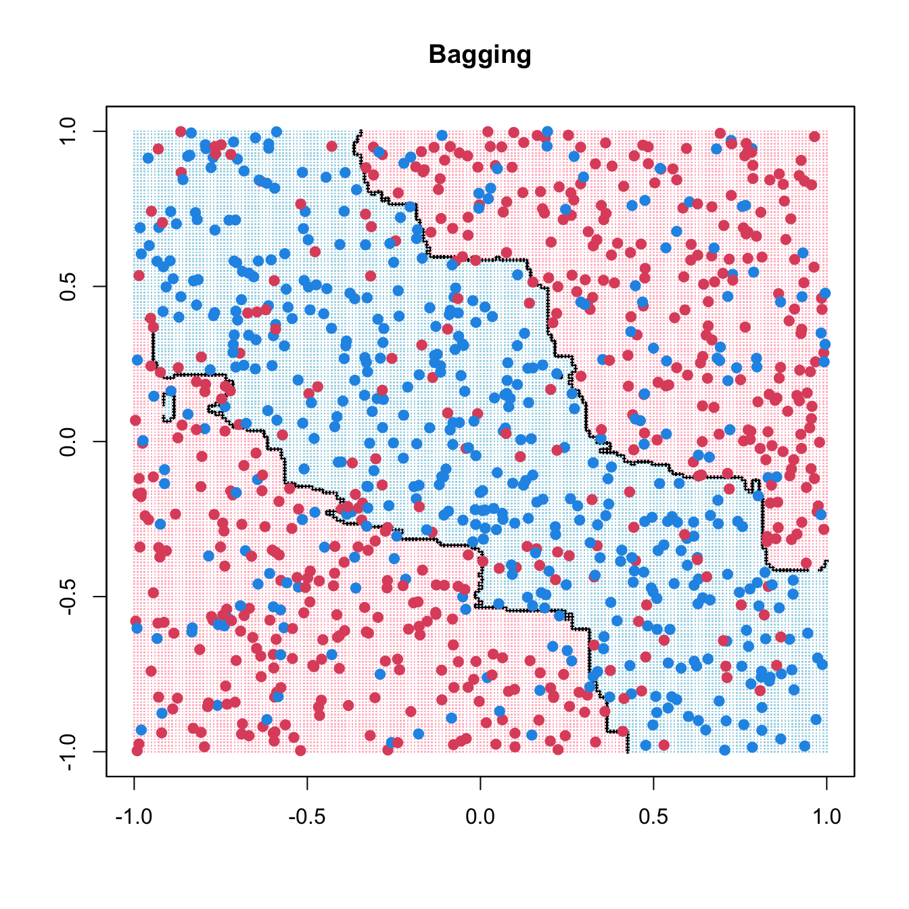
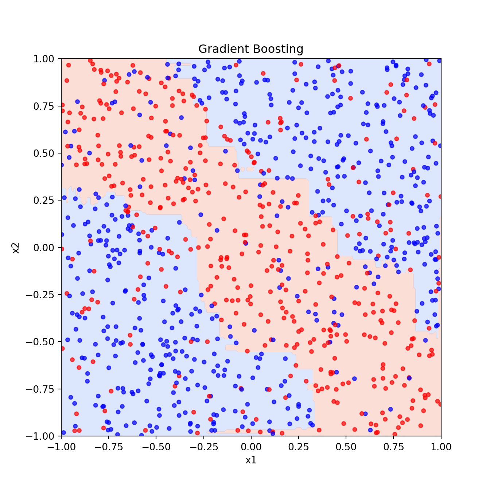

14 - Tree Methods Code Demo
1 R implementation
1.1 CART
1.1.1 rpart::rpart()
Code
library(rpart)
rpart_fit <- rpart(as.factor(y) ~ x1 + x2, data = data.frame(x1, x2, y))
pred <- matrix(predict(rpart_fit, xgrid, type = "class") == 1, 201, 201)
contour(seq(-1, 1, 0.01), seq(-1, 1, 0.01), pred, levels = 0.5, labels = "",
lwd = 3)
points(xgrid, pch = ".", cex = 0.2, col = ifelse(pred, "lightblue", "pink"))
points(x1, x2, col = ifelse(y == 1, 4, 2), pch = 19, yaxt = "n", xaxt = "n")
box()
title(main = list("CART"))-
rpart()uses the 10-fold CV (xvalinrpart.control()) -
cpis the complexity parameter
Code
rpart.control(minsplit = 20, minbucket = round(minsplit/3), cp = 0.01,
maxcompete = 4, maxsurrogate = 5, usesurrogate = 2, xval = 10,
surrogatestyle = 0, maxdepth = 30, ...)Code
rpart_fit$cptable CP nsplit rel error xerror xstd
1 0.06485356 0 1.0000000 1.0000000 0.03304618
2 0.05857741 3 0.7845188 0.9058577 0.03277990
3 0.05439331 4 0.7259414 0.8284519 0.03235476
4 0.03242678 5 0.6715481 0.7050209 0.03127115
5 0.02719665 9 0.5418410 0.6401674 0.03048685
6 0.01464435 10 0.5146444 0.6087866 0.03004981
7 0.01359833 11 0.5000000 0.5732218 0.02950636
8 0.01000000 13 0.4728033 0.5732218 0.02950636Code
plotcp(rpart_fit)Code
prunedtree <- prune(rpart_fit, cp = 0.012)
prunedtreen= 1000
node), split, n, loss, yval, (yprob)
* denotes terminal node
1) root 1000 478 0 (0.5220000 0.4780000)
2) x1>=0.8238083 93 26 0 (0.7204301 0.2795699)
4) x2>=-0.4195459 74 10 0 (0.8648649 0.1351351) *
5) x2< -0.4195459 19 3 1 (0.1578947 0.8421053) *
3) x1< 0.8238083 907 452 0 (0.5016538 0.4983462)
6) x2< -0.546795 203 69 0 (0.6600985 0.3399015)
12) x1< 0.3121958 145 27 0 (0.8137931 0.1862069) *
13) x1>=0.3121958 58 16 1 (0.2758621 0.7241379) *
7) x2>=-0.546795 704 321 1 (0.4559659 0.5440341)
14) x2>=0.5828916 189 74 0 (0.6084656 0.3915344)
28) x1>=-0.1670433 115 23 0 (0.8000000 0.2000000) *
29) x1< -0.1670433 74 23 1 (0.3108108 0.6891892) *
15) x2< 0.5828916 515 206 1 (0.4000000 0.6000000)
30) x1< -0.9438582 17 2 0 (0.8823529 0.1176471) *
31) x1>=-0.9438582 498 191 1 (0.3835341 0.6164659)
62) x1>=0.192903 169 79 1 (0.4674556 0.5325444)
124) x2>=-0.1156255 97 33 0 (0.6597938 0.3402062) *
125) x2< -0.1156255 72 15 1 (0.2083333 0.7916667) *
63) x1< 0.192903 329 112 1 (0.3404255 0.6595745)
126) x2< -0.2736896 80 31 0 (0.6125000 0.3875000)
252) x1< -0.05781444 57 16 0 (0.7192982 0.2807018) *
253) x1>=-0.05781444 23 8 1 (0.3478261 0.6521739) *
127) x2>=-0.2736896 249 63 1 (0.2530120 0.7469880)
254) x1< -0.568942 82 34 1 (0.4146341 0.5853659)
508) x2< 0.2270988 39 13 0 (0.6666667 0.3333333) *
509) x2>=0.2270988 43 8 1 (0.1860465 0.8139535) *
255) x1>=-0.568942 167 29 1 (0.1736527 0.8263473) *Code
rpart.plot::rpart.plot(prunedtree)1.1.2 tree::tree()
Read ISLR Sec 8.3 for tree() demo.
1.2 Bagging
Code
library(ipred)
bag_fit <- bagging(as.factor(y) ~ x1 + x2, data = data.frame(x1, x2, y),
nbagg = 200, ns = 400)
pred <- matrix(predict(prune(bag_fit), xgrid) == 1, 201, 201)
contour(seq(-1, 1, 0.01), seq(-1, 1, 0.01), pred, levels = 0.5, labels = "",
lwd = 3)
points(xgrid, pch = ".", cex = 0.2, col = ifelse(pred, "lightblue", "pink"))
points(x1, x2, col = ifelse(y == 1, 4, 2), pch = 19, yaxt = "n", xaxt = "n")
box()
title(main = list("Bagging"))
1.3 Random Forests
Code
randomForest 4.7-1.1Type rfNews() to see new features/changes/bug fixes.Code
rf_fit <- randomForest(cbind(x1, x2), as.factor(y), ntree = 200, mtry = 1,
nodesize = 20, sampsize = 400)
pred <- matrix(predict(rf_fit, xgrid) == 1, 201, 201)
contour(seq(-1, 1, 0.01), seq(-1, 1, 0.01), pred, levels = 0.5, labels = "",
lwd = 3)
points(xgrid, pch = ".", cex = 0.2, col = ifelse(pred, "lightblue", "pink"))
points(x1, x2, col = ifelse(y == 1, 4, 2), pch = 19, yaxt="n", xaxt = "n")
box()
title(main = list("Random Forests", cex = 2))1.4 Boosting
Loaded gbm 2.2.2This version of gbm is no longer under development. Consider transitioning to gbm3, https://github.com/gbm-developers/gbm3Code
gbm_fit <- gbm(y ~ ., data = data.frame(x1, x2, y), distribution = "bernoulli",
n.trees = 10000, shrinkage = 0.01, bag.fraction = 0.6,
interaction.depth = 2, cv.folds = 10)
usetree <- gbm.perf(gbm_fit, method = "cv", plot.it = FALSE)
Fx <- predict(gbm_fit, xgrid, n.trees=usetree)
pred <- matrix(1 / (1 + exp(-2 * Fx)) > 0.5, 201, 201)
contour(seq(-1, 1, 0.01), seq(-1, 1, 0.01), pred, levels = 0.5, labels = "",
lwd = 3)
points(xgrid, pch = ".", cex = 0.2, col = ifelse(pred, "lightblue", "pink"))
points(x1, x2, col = ifelse(y == 1, 4, 2), pch = 19, yaxt = "n", xaxt = "n")
box()
title(main = list("Boosting"))2 Python implementation
Code
import numpy as np
import matplotlib.pyplot as plt
from sklearn.tree import DecisionTreeClassifier
from sklearn.model_selection import GridSearchCVCode
np.random.seed(2025)
n = 1000
x1 = np.random.uniform(-1, 1, n)
x2 = np.random.uniform(-1, 1, n)
y = np.random.binomial(1, p = np.where((x1 + x2 > -0.5) & (x1 + x2 < 0.5), 0.8, 0.2))
x1_grid, x2_grid = np.meshgrid(np.linspace(-1, 1, 201), np.linspace(-1, 1, 201))
xgrid = np.c_[x1_grid.ravel(), x2_grid.ravel()]2.1 CART
Code
dt = DecisionTreeClassifier(random_state=2025)
param_grid = {
"max_depth": [3, 5, 7, 10], # Control tree depth
"min_samples_split": [2, 5, 10], # Minimum samples to split a node
"min_samples_leaf": [1, 5, 10] # Minimum samples in a leaf node
}
grid_search = GridSearchCV(dt, param_grid, cv=10, scoring="accuracy")
grid_search.fit(np.c_[x1, x2], y)GridSearchCV(cv=10, estimator=DecisionTreeClassifier(random_state=2025),
param_grid={'max_depth': [3, 5, 7, 10],
'min_samples_leaf': [1, 5, 10],
'min_samples_split': [2, 5, 10]},
scoring='accuracy')
In a Jupyter environment, please rerun this cell to show the HTML representation or trust the notebook. On GitHub, the HTML representation is unable to render, please try loading this page with nbviewer.org.
GridSearchCV(cv=10, estimator=DecisionTreeClassifier(random_state=2025),
param_grid={'max_depth': [3, 5, 7, 10],
'min_samples_leaf': [1, 5, 10],
'min_samples_split': [2, 5, 10]},
scoring='accuracy')DecisionTreeClassifier(random_state=2025)
DecisionTreeClassifier(random_state=2025)
Code
best_dt = grid_search.best_estimator_
best_pred = best_dt.predict(xgrid).reshape(201, 201)
plt.figure()
plt.contourf(x1_grid, x2_grid, best_pred, cmap="coolwarm", alpha=0.3)
plt.scatter(x1, x2, c=y, cmap="bwr", s=15, alpha=0.7)
plt.xlabel("x1")
plt.ylabel("x2")
plt.title("CART")
plt.show()2.2 Bagging
Code
from sklearn.ensemble import BaggingClassifierCode
bagging_clf = BaggingClassifier(
estimator=DecisionTreeClassifier(),
n_estimators=200, # Same as nbagg = 200 in R
max_samples=0.4, # Equivalent to ns = 400 in R (approx)
random_state=2025
)
bagging_clf.fit(np.c_[x1, x2], y)BaggingClassifier(estimator=DecisionTreeClassifier(), max_samples=0.4,
n_estimators=200, random_state=2025)
In a Jupyter environment, please rerun this cell to show the HTML representation or trust the notebook. On GitHub, the HTML representation is unable to render, please try loading this page with nbviewer.org.
BaggingClassifier(estimator=DecisionTreeClassifier(), max_samples=0.4,
n_estimators=200, random_state=2025)DecisionTreeClassifier()
DecisionTreeClassifier()
Code
bagging_pred = bagging_clf.predict(xgrid).reshape(201, 201)
plt.figure()
plt.contourf(x1_grid, x2_grid, bagging_pred, cmap="coolwarm", alpha=0.3)
plt.scatter(x1, x2, c=y, cmap="bwr", s=15, alpha=0.7)
plt.xlabel("x1")
plt.ylabel("x2")
plt.title("Bagging")
plt.show()2.3 Random Forests
Code
from sklearn.ensemble import RandomForestClassifierCode
rf_clf = RandomForestClassifier(
n_estimators=200, # Equivalent to ntree = 200 in R
max_features=1, # Equivalent to mtry = 1 in R
min_samples_leaf=20, # Equivalent to nodesize = 20 in R
max_samples=400, # Equivalent to sampsize = 400 in R
random_state=2025
)
rf_clf.fit(np.c_[x1, x2], y)RandomForestClassifier(max_features=1, max_samples=400, min_samples_leaf=20,
n_estimators=200, random_state=2025)
In a Jupyter environment, please rerun this cell to show the HTML representation or trust the notebook. On GitHub, the HTML representation is unable to render, please try loading this page with nbviewer.org.
RandomForestClassifier(max_features=1, max_samples=400, min_samples_leaf=20,
n_estimators=200, random_state=2025)Code
rf_pred = rf_clf.predict(xgrid).reshape(201, 201)
plt.figure()
plt.contourf(x1_grid, x2_grid, rf_pred, cmap="coolwarm", alpha=0.3)
plt.scatter(x1, x2, c=y, cmap="bwr", s=15, alpha=0.7)
plt.xlabel("x1")
plt.ylabel("x2")
plt.title("Random Forests")
plt.show()2.4 Boosting
Code
from sklearn.ensemble import GradientBoostingClassifier
from sklearn.model_selection import cross_val_scoreCode
gbm_clf = GradientBoostingClassifier(
n_estimators=10000, # Equivalent to n.trees = 10000
learning_rate=0.01, # Equivalent to shrinkage = 0.01
subsample=0.6, # Equivalent to bag.fraction = 0.6
max_depth=2, # Equivalent to interaction.depth = 2
random_state=2025
)
cv_scores = []
for n_trees in range(100, 2000, 100): # Testing tree counts
gbm_clf.set_params(n_estimators=n_trees)
score = np.mean(cross_val_score(gbm_clf, np.c_[x1, x2], y, cv=10, scoring='accuracy'))
cv_scores.append((n_trees, score))GradientBoostingClassifier(learning_rate=0.01, max_depth=2, n_estimators=1900,
random_state=2025, subsample=0.6)
In a Jupyter environment, please rerun this cell to show the HTML representation or trust the notebook. On GitHub, the HTML representation is unable to render, please try loading this page with nbviewer.org.
GradientBoostingClassifier(learning_rate=0.01, max_depth=2, n_estimators=1900,
random_state=2025, subsample=0.6)Code
best_n_trees = max(cv_scores, key=lambda x: x[1])[0]
gbm_clf.set_params(n_estimators=best_n_trees)GradientBoostingClassifier(learning_rate=0.01, max_depth=2, n_estimators=500,
random_state=2025, subsample=0.6)
In a Jupyter environment, please rerun this cell to show the HTML representation or trust the notebook. On GitHub, the HTML representation is unable to render, please try loading this page with nbviewer.org.
GradientBoostingClassifier(learning_rate=0.01, max_depth=2, n_estimators=500,
random_state=2025, subsample=0.6)Code
gbm_clf.fit(np.c_[x1, x2], y)GradientBoostingClassifier(learning_rate=0.01, max_depth=2, n_estimators=500,
random_state=2025, subsample=0.6)
In a Jupyter environment, please rerun this cell to show the HTML representation or trust the notebook. On GitHub, the HTML representation is unable to render, please try loading this page with nbviewer.org.
GradientBoostingClassifier(learning_rate=0.01, max_depth=2, n_estimators=500,
random_state=2025, subsample=0.6)Code
Fx = gbm_clf.decision_function(xgrid) # Raw output before sigmoid transformation
pred = (1 / (1 + np.exp(-2 * Fx)) > 0.5).reshape(201, 201)
plt.figure()
plt.contourf(x1_grid, x2_grid, pred, cmap="coolwarm", alpha=0.3)
plt.scatter(x1, x2, c=y, cmap="bwr", s=15, alpha=0.7)
plt.xlabel("x1")
plt.ylabel("x2")
plt.title("Gradient Boosting")
plt.show()